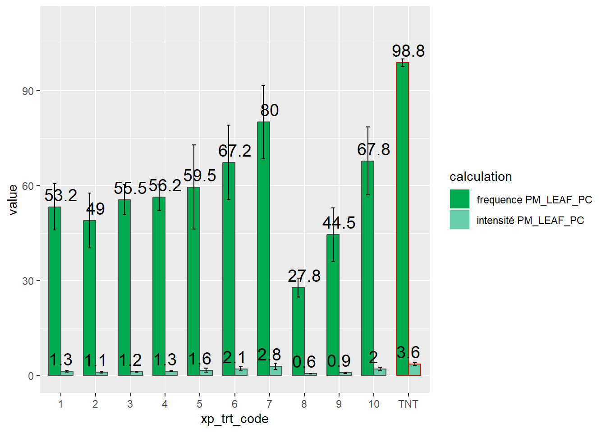
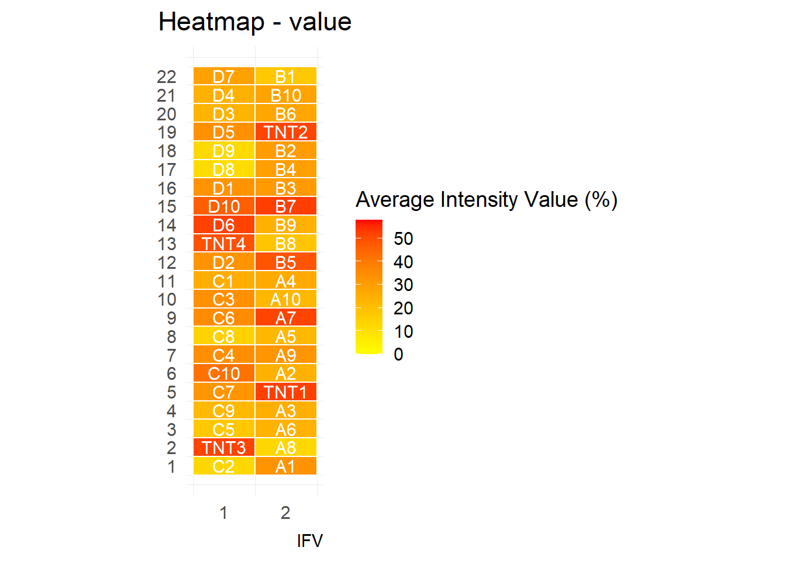
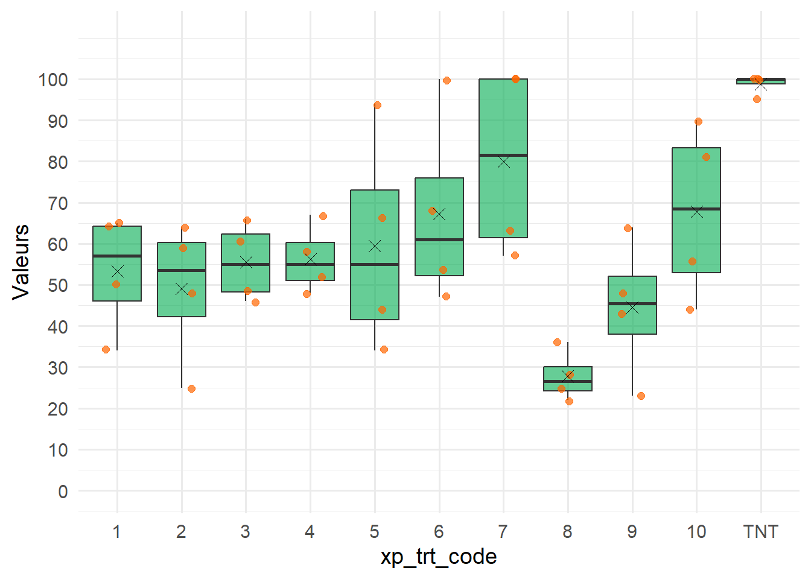

library(startbox)startbox
Introduction
Le package {startbox} est dédié à la gestion et à l’analyse des données d’essais en protection phytosanitaire, en particulier pour la vigne.
Manipulation des données
Le package {startbox} propose plusieurs fonctions pour charger, importer et exporter des données en interaction avec un fichier standard Excel.
Exporter le fichier Excel standard
Le package fonctionne avec un fichier Excel standard, qui stocke les données descriptives de l’essai (les modalités mises en place, les caractéristiques de la parcelle, le plan d’expérience) et les données observées. Ce modèle de fichier standard est accessible avec la fonction get_template_excel().
Vous pourrez compléter ultérieurement ce fichier directement dans Excel.
Créer un objet user_data
Le package fonctionne avec un objet de classe user_data. Cet objet permet de manipuler dans l’environnement R les données d’observations et les métadonnées associées à un essai.
Deux cas sont possibles lors de la création :
Cas 1 : Sans fichier Excel
On peut décider de créer l’objet ‘user_data’ dans le cas où nous voulons commencer la suivie d’un essai où que nous n’avons pas besoins de charger les données du fichiers Excel (données d’observations et données sur les placettes et modalités (métadonnées)). Dans ce cas on se basera sur le fichier Excel, qui est le fichier vierge sans données simplement les feuilles et les tableaux de précréé. On crée dans ce cas la classe de cette manière :
# Cas 1 : création d'un objet vide
mydata <- startbox::user_data$new()
#> 📄 No file provided. Using default template.On lui affecte un nom au départ (ici mydata) que nous réutiliserons tout au long de l’utilisation du package.
Cas 2 : Avec un fichier Excel fourni
On décide de créer l’objet ‘user_data’ dans le cas où nous avons déjà un fichier Excel comprenant les données d’un essai. On crée la classe de l’objet de cette façon, en mettant dans le ‘trial_file’ le chemin de notre fichier Excel :
# Cas 2 : création d'un objet avec fichier Excel existant
mydata2 <- startbox::user_data$new(trial_file = system.file("extdata","standard_exemple.xlsx",package="startbox"))
#> 📄 Using provided Excel file: standard_exemple.xlsxOn lui affecte un nom au départ (ici mydata2) que nous réutiliserons tout au long de l’utilisation du package.
Lorsqu’on a créé l’objet avec un fichier Excel nous avons plusieurs options qui se proposent à nous, le chargement des données d’observations et le chargement des métadonnées.
Charger les feuilles d’observations
La fonction load_data_sheets permet de charger dans l’environnement de travail toutes les feuilles dont le nom commence par ‘data_’. On passe en paramètre de la fonction le nom que nous avons donné à l’objet (ici mydata).
Elles sont stockées dans l’objet de classe user_data.
startbox::load_data_sheets(mydata2)
#> ℹ️ No sheets starting with 'data_' found in file.Charger les métatadonnées
Les feuilles de métadonnées (placette, modalite) peuvent être chargées dans l’environnement R à tout moment à l’aide de la fonction load_metadata_sheets, en passant en paramètre le nom que nous avons donné à l’objet user_data (ici mydata2). Il est nécessaire qu’un fichier ait été transmit dans trial_file sinon ça ne fonctionnera pas.
Elles sont stockées dans l’objet de classe user_data.
startbox::load_metadata_sheets(mydata2)
#> ✅ Sheet 'placette' loaded into metadata$placette.
#> ✅ Sheet 'modalite' loaded into metadata$modalite.Utiliser le wrapper complet pour charger les données
Pour automatiser l’ensemble des étapes de chargement des données, la fonction wrapper_data permet de réaliser les fonctions load_metadata_sheets et load_data_sheets en une seule commande.
startbox::wrapper_data(mydata2)
#> ℹ️ No sheets starting with 'data_' found in file.
#> ✅ Sheet 'placette' loaded into metadata$placette.
#> ✅ Sheet 'modalite' loaded into metadata$modalite.Importer des données d’observation
Cas de données déjà standardisées
Il est possible d’ajouter directement un tableau de données (data.frame) dans l’attribut obs_data de l’objet user_data. Cela peut être pratique si l’utilisateur travaille avec un fichier .csv brut ou des données créées directement dans R. Pour être utilisable par la suite, le tableau de données doit contenir les colonnes plot_id, observation_date et au moins une colonne avec une variable mesurée.
# Exemple : chargement d'un fichier CSV local
myfilepath <- system.file("extdata","teisso_2024_dataF2.csv",package="startbox")
data1 <- read.csv2(myfilepath)
# Ajout direct dans l'objet user_data avec le nom du fichier
mydata2$add_obs(name = basename(myfilepath), df = data1)
#> ✅ Adding a new element: teisso_2024_dataF2.csvL’utilisateur pourra ultérieurement exporter le fichier Excel standardisé avec une nouvelle feuille qui contiendra ces données d’observations.
Cas des données Topvigne
Les données d’observation peuvent aussi provenir de l’application Topvigne.
Il est possible d’utiliser la fonction standardise_topvigne_csv qui permet de transformer et standardiser les données collectées avec Topvigne.
file_path <- system.file("extdata","maladie_teisso_2024_11h12min_F1_17.06.csv",package="startbox")
# verification si le fichier est issu de topvigne & importation
data_F1 <- startbox::standardise_topvigne_csv(file_path)
head(data_F1)
#> # A tibble: 6 × 8
#> PM_LEAF_PC bbch_stage plot_id plot_block observation_date experiment_id
#> <int> <chr> <chr> <chr> <chr> <chr>
#> 1 1 BBCH 71 A10 A 17/06/2024 teisso_2024
#> 2 3 BBCH 71 A10 A 17/06/2024 teisso_2024
#> 3 1 BBCH 71 A10 A 17/06/2024 teisso_2024
#> 4 1 BBCH 71 A10 A 17/06/2024 teisso_2024
#> 5 2 BBCH 71 A10 A 17/06/2024 teisso_2024
#> 6 2 BBCH 71 A10 A 17/06/2024 teisso_2024
#> # ℹ 2 more variables: Observateurs <chr>, Scribe <chr>Les données sont ensuite ajoutées à l’objet user_data.
# Ajout direct dans l'objet user_data avec le nom du fichier
mydata2$add_obs(name = "F1", df = data_F1)
#> ✅ Adding a new element: F1Exporter les données
La fonction export_data_sheets permet de créer une nouvelle version du fichier Excel en y ajoutant les feuilles d’observations présentes dans l’objet. Si un fichier Excel a été fourni lors de la création de l’objet, c’est celui-ci qui sera utilisé comme base. Dans le cas contraire, un fichier Excel vierge sera utilisé par défaut. Le fichier est exporté avec un horodatage automatique.
Calculer les tableaux de résumé
Le jeu de données d’observation qui sera utilisé à titre d’exemple est le jeu de données d’observation des notations brutes de mildiou sur feuilles réalisées le 17 juin 2024, préalablement importé dans mydata2.
Par commodité, il est stocké dans le dataframe data_F1.
data_F1 <-mydata2$obs_data$F1
head(data_F1)
#> # A tibble: 6 × 8
#> PM_LEAF_PC bbch_stage plot_id plot_block observation_date experiment_id
#> <int> <chr> <chr> <chr> <chr> <chr>
#> 1 1 BBCH 71 A10 A 17/06/2024 teisso_2024
#> 2 3 BBCH 71 A10 A 17/06/2024 teisso_2024
#> 3 1 BBCH 71 A10 A 17/06/2024 teisso_2024
#> 4 1 BBCH 71 A10 A 17/06/2024 teisso_2024
#> 5 2 BBCH 71 A10 A 17/06/2024 teisso_2024
#> 6 2 BBCH 71 A10 A 17/06/2024 teisso_2024
#> # ℹ 2 more variables: Observateurs <chr>, Scribe <chr>Préparation des données avant analyse
Pour analyser les données observées, il est nécessaire d’associer chaque placette à une modalité expérimentale.
Par association avec les tables descriptives de l’essai
Par décodage des identifiants de placette [non recommandé]
Si la table d’association entre les identifiants des placettes et les modalités n’existe pas, il est possible de décoder les identifiants des placettes pour en extraire la partie concernant le code de la modalité.
Dans notre exemple, les identifiants de placette plot_id ont un codage du type “1A”, ou 1 est le code de la modalité, et A le code du bloc. Les noms de bloc sont donnés dans la colonne plot_block
La fonction remove_string_pairwise permet d’enlever le nom du bloc de plot_id.
Avant de poursuivre, il est possible d’extraire quelques informations de plot_id pour enrichir notre tableau avec le code du traitement et le code du bloc.
# recuperation des codes des traitements dans la colonne xp_trt_code
data_F1$xp_trt_code <- startbox::remove_string_pairwise(vec=data_F1$plot_id,
pattern = data_F1$plot_block)
#> [1] "Strings extracted are : 10 ; 1 ; 2 ; 3 ; 4 ; 5 ; 6 ; 7 ; 8 ; 9 ; TNT"
head(data_F1)
#> # A tibble: 6 × 9
#> PM_LEAF_PC bbch_stage plot_id plot_block observation_date experiment_id
#> <int> <chr> <chr> <chr> <chr> <chr>
#> 1 1 BBCH 71 A10 A 17/06/2024 teisso_2024
#> 2 3 BBCH 71 A10 A 17/06/2024 teisso_2024
#> 3 1 BBCH 71 A10 A 17/06/2024 teisso_2024
#> 4 1 BBCH 71 A10 A 17/06/2024 teisso_2024
#> 5 2 BBCH 71 A10 A 17/06/2024 teisso_2024
#> 6 2 BBCH 71 A10 A 17/06/2024 teisso_2024
#> # ℹ 3 more variables: Observateurs <chr>, Scribe <chr>, xp_trt_code <chr>Caution
Cette fonction est à utiliser avec précaution ! Dans tous les cas, il est préférable de compléter les feuilles placette et modalité dans le fichier standard. Cela permet en outre d’enrichir les données avec le nom des traitements et la position des placettes.
Fonctions de calcul
Description des fonctions
Le tableau ci-dessous résume les fonctions intégrées au package :
| Calcul | Fonction {startbox} | Description |
|---|---|---|
| Fréquence d’attaque | incidence |
Cette fonction calcule la fréquence de la maladie dans la population observée, c’est à dire le nombre d’unités échantillonnées (feuilles, régimes, plantes…) atteintes exprimé en pourcentage du nombre total d’unités évaluées. |
| Intensité d’attaque | intensity |
Cette fonction calcule l’intensité de la maladie, comme la valeur moyenne des mesures de séverité. L’intensité de la maladie correspond à la quantité de maladie présente dans la population, exprimée en pourcentage. |
| Efficacité | efficacy |
Cette fonction calcule l’efficacité, c’est à dire le niveau de réduction des organismes nuisibles ciblés ou des dommages qu’ils causent à la plante, après application d’un traitement, par rapport à un témoin non traité. L’efficacité est exprimée en pourcentage. |
| Sévérité sur les unités malades | severity_diseased |
Cette fonction calcule la séverité de la maladie, comme la valeur moyenne des mesures de séverité pour les unités malades UNIQUEMENT (feuilles, grappes, plantes…). La séverité de la maladie correspond à la superficie d’une unité d’échantillonnage affectée par la maladie, exprimée en pourcentage de la superficie totale. |
Exemples de calcul
obs_moda <- c(0,0,0,0,10,5,0,2,0,0,0,15,20,50)
obs_tnt <- c(10,20,60,0,100,50,0,20,0,10,20,15,2,50)
startbox::incidence(obs_moda)
#> [1] 42.85714
startbox::intensity(obs_moda)
#> [1] 7.285714
startbox::severity_diseased(obs_moda)
#> [1] 17
# l'efficacité est calculée en comparant une valeur dans une modalité à la valeur de la même variable obtentue dans le témoin non traité
startbox::efficacy(startbox::incidence(obs_moda),
value_tnt = startbox::incidence(obs_tnt))
#> [1] 45.45455Calcul de la fréquence et de l’intensité d’attaque à partir d’un jeu de données d’observations
La fréquence et l’intensité d’attaque sont calculées par défaut à partir des données brutes avec la fonction resume_data(). Le paramètre group_cols permet de définir les colonnes qui regroupent les données entre elles. Dans l’exemple ci-dessous, on calcule frequence et intensité d’attaque par plot_id (placette), sur la variable PM_LEAF_PC.
Le résultat est un dataframe, incluant une colonne calculation qui précise le nom des fonctions appliquées sur la variable et une colonne value qui donne les valeurs calculées.
Calcul par placette
F_I_placette <- startbox::resume_data(data_F1,
var_col = "PM_LEAF_PC",
group_cols = c("plot_id","xp_trt_code","plot_block"),
funs = list(frequence = startbox::incidence))
F_I_placette
#> plot_id xp_trt_code plot_block value nb calculation
#> 1 A1 1 A 64 100 frequence PM_LEAF_PC
#> 2 A10 10 A 44 100 frequence PM_LEAF_PC
#> 3 A2 2 A 48 100 frequence PM_LEAF_PC
#> 4 A3 3 A 49 100 frequence PM_LEAF_PC
#> 5 A4 4 A 52 100 frequence PM_LEAF_PC
#> 6 A5 5 A 44 100 frequence PM_LEAF_PC
#> 7 A6 6 A 47 100 frequence PM_LEAF_PC
#> 8 A7 7 A 100 100 frequence PM_LEAF_PC
#> 9 A8 8 A 25 100 frequence PM_LEAF_PC
#> 10 A9 9 A 64 100 frequence PM_LEAF_PC
#> 11 B1 1 B 34 100 frequence PM_LEAF_PC
#> 12 B10 10 B 56 100 frequence PM_LEAF_PC
#> 13 B2 2 B 59 100 frequence PM_LEAF_PC
#> 14 B3 3 B 61 100 frequence PM_LEAF_PC
#> 15 B4 4 B 58 100 frequence PM_LEAF_PC
#> 16 B5 5 B 94 100 frequence PM_LEAF_PC
#> 17 B6 6 B 54 100 frequence PM_LEAF_PC
#> 18 B7 7 B 100 100 frequence PM_LEAF_PC
#> 19 B8 8 B 36 100 frequence PM_LEAF_PC
#> 20 B9 9 B 48 100 frequence PM_LEAF_PC
#> 21 C1 1 C 50 100 frequence PM_LEAF_PC
#> 22 C10 10 C 81 100 frequence PM_LEAF_PC
#> 23 C2 2 C 25 100 frequence PM_LEAF_PC
#> 24 C3 3 C 66 100 frequence PM_LEAF_PC
#> 25 C4 4 C 67 100 frequence PM_LEAF_PC
#> 26 C5 5 C 34 100 frequence PM_LEAF_PC
#> 27 C6 6 C 68 100 frequence PM_LEAF_PC
#> 28 C7 7 C 63 100 frequence PM_LEAF_PC
#> 29 C8 8 C 28 100 frequence PM_LEAF_PC
#> 30 C9 9 C 43 100 frequence PM_LEAF_PC
#> 31 D1 1 D 65 100 frequence PM_LEAF_PC
#> 32 D10 10 D 90 100 frequence PM_LEAF_PC
#> 33 D2 2 D 64 100 frequence PM_LEAF_PC
#> 34 D3 3 D 46 100 frequence PM_LEAF_PC
#> 35 D4 4 D 48 100 frequence PM_LEAF_PC
#> 36 D5 5 D 66 100 frequence PM_LEAF_PC
#> 37 D6 6 D 100 100 frequence PM_LEAF_PC
#> 38 D7 7 D 57 100 frequence PM_LEAF_PC
#> 39 D8 8 D 22 100 frequence PM_LEAF_PC
#> 40 D9 9 D 23 100 frequence PM_LEAF_PC
#> 41 TNT1 TNT A 100 100 frequence PM_LEAF_PC
#> 42 TNT2 TNT B 100 100 frequence PM_LEAF_PC
#> 43 TNT3 TNT C 100 100 frequence PM_LEAF_PC
#> 44 TNT4 TNT D 95 100 frequence PM_LEAF_PCIl est possible de passer un tableau résumé en format “wide” avec la fonction resume_pivot_wider.
head(startbox::resume_pivot_wider(F_I_placette))
#> # A tibble: 6 × 5
#> plot_id xp_trt_code plot_block nb `frequence PM_LEAF_PC`
#> <chr> <chr> <chr> <int> <dbl>
#> 1 A1 1 A 100 64
#> 2 A10 10 A 100 44
#> 3 A2 2 A 100 48
#> 4 A3 3 A 100 49
#> 5 A4 4 A 100 52
#> 6 A5 5 A 100 44Calcul par modalité
Une fois le calcul fait par placette, il est possible de faire la moyenne par modalité. Il suffit de réappliquer la fonction resume_data sur le tableau précédent en demandant un calcul de moyenne avec la fonction mean, que l’on peut compléter par le calcul de l’écart-type avec la fonction sd.
Ici le calcul est fait uniquement sur la fréquence pour rendre plus lisible l’affichage.
F_moda <- startbox::resume_data(F_I_placette %>% dplyr::filter(calculation == "frequence PM_LEAF_PC"),
var_col = "value",
group_cols = c("xp_trt_code"),
funs = list(moyenne = mean, ecart_type = sd))
head(startbox::resume_pivot_wider(F_moda))
#> # A tibble: 6 × 4
#> xp_trt_code nb `moyenne frequence PM_LEAF_PC` ecart_type frequence PM_LEA…¹
#> <chr> <int> <dbl> <dbl>
#> 1 1 4 53.2 14.5
#> 2 10 4 67.8 21.4
#> 3 2 4 49 17.3
#> 4 3 4 55.5 9.54
#> 5 4 4 56.2 8.26
#> 6 5 4 59.5 26.6
#> # ℹ abbreviated name: ¹`ecart_type frequence PM_LEAF_PC`Avec la même logique, il est possible de faire le calcul par bloc.
Calcul de l’efficacité
Important
L’efficacité se calcule sur l’intensité d’attaque ou sur la fréquence d’attaque. Il faut donc au préalable avoir réalisé ces calculs en utilisant la fonction resume_data.
L’objectif est de calculer l’efficacité du traitement pour chaque placette, à la fois sur la fréquence et l’intensité d’attaque. Pour réaliser le calcul, nous allons donc appliquer la fonction efficacy sur les valeurs de fréquence et d’intensité calculées par placette précédemment avec la fonction resume_data, en regroupant par plot_id.
Efficacité calculée à partir de la moyenne de tous les TNT
Dans le cas le plus simple, l’efficacité de traitement est calculée pour chaque placette à partir de la moyenne de tous les TNT 1. Il s’agit du cas par défaut.
eff_par_placette <- startbox::resume_data(F_I_placette,
var_col = "value",
group_cols = c("plot_id"),
funs=list(efficacite=startbox::efficacy))
#> [1] "4 TNT used for calculation of efficacy"
head(eff_par_placette)
#> plot_id calculation mean_tnt value nb
#> 1 A1 efficacite frequence PM_LEAF_PC 98.75 35.18987 1
#> 2 A10 efficacite frequence PM_LEAF_PC 98.75 55.44304 1
#> 3 A2 efficacite frequence PM_LEAF_PC 98.75 51.39241 1
#> 4 A3 efficacite frequence PM_LEAF_PC 98.75 50.37975 1
#> 5 A4 efficacite frequence PM_LEAF_PC 98.75 47.34177 1
#> 6 A5 efficacite frequence PM_LEAF_PC 98.75 55.44304 1Efficacité calculée à l’aide d’une table d’association
Il est possible d’avoir des situations plus complexes, ou l’efficacité est calculée par rapport au TNT de chaque bloc, ou même selon une table d’association qui associe à chaque placette plot_id le TNT à prendre en référence, identifié dans ce cas par tnt_id (c’est à dire le plot_id pour le TNT).
Génération d’une table d’association
df_plot_tnt <- data.frame(tnt_id=rep(paste0("TNT",1:4),11),
plot_id = sample(unique(F_I_placette$plot_id)))
df_plot_tnt %>%
dplyr::mutate(tnt_id = dplyr::case_when(
plot_id == "TNT1" ~ "TNT1",
plot_id == "TNT2" ~ "TNT2",
plot_id == "TNT3" ~ "TNT3",
plot_id == "TNT4" ~ "TNT4",
TRUE ~ tnt_id,
)) -> df_plot_tnt
# visualisation de la table d'association
head(df_plot_tnt)
#> tnt_id plot_id
#> 1 TNT1 C10
#> 2 TNT2 B3
#> 3 TNT3 D3
#> 4 TNT4 C6
#> 5 TNT1 D1
#> 6 TNT2 B8Calcul de l’efficacité avec la table d’association
# calcul de l'efficacité en tenant compte de l'association de chaque placette avec son TNT
eff_placette_tnt <- startbox::resume_data(F_I_placette,
var_col = "value",
group_cols = c("plot_id"),
funs=list(efficacite=startbox::efficacy),
df_tnt = df_plot_tnt)
#> [1] "1 TNT used for calculation of efficacy"
head(eff_placette_tnt)
#> plot_id calculation mean_tnt value nb
#> 1 A1 efficacite frequence PM_LEAF_PC 100 36.00000 1
#> 2 A10 efficacite frequence PM_LEAF_PC 100 56.00000 1
#> 3 A2 efficacite frequence PM_LEAF_PC 100 52.00000 1
#> 4 A3 efficacite frequence PM_LEAF_PC 95 48.42105 1
#> 5 A4 efficacite frequence PM_LEAF_PC 100 48.00000 1
#> 6 A5 efficacite frequence PM_LEAF_PC 95 53.68421 1Réaliser l’analyse statistique
Le package {startbox} propose des fonctions pour appliquer automatiquement des tests statistiques (ANOVA, Kruskal-Wallis) sur les variables observées.
La fonction test_stats() permet de comparer les modalités de traitement en fonction de la variable d’intérêt. Elle retourne le test utilisé, la p_valeur du test et les groupes des modalites dans le dataframe.
## tableau bilan sur la fréquence
F_plot <- startbox::resume_data(data_F1,
var_col = "PM_LEAF_PC",
group_cols = c("plot_id","xp_trt_code","plot_block"),
funs = list(frequence = startbox::incidence, intensité = startbox::intensity))
startbox::test_stats(data = F_plot, value_col = "value")
#> [frequence PM_LEAF_PC] Shapiro p =0.449 | Bartlett p =0.07
#> [intensité PM_LEAF_PC] Shapiro p =0.034 | Bartlett p =0.001
#> modality mean_frequence groups_frequence mean_intensité groups_intensité
#> 11 TNT 98.75 a 3.5750 a
#> 8 7 80.00 ab 2.8400 ab
#> 2 10 67.75 bc 1.9875 abc
#> 7 6 67.25 bc 2.1000 abc
#> 1 1 53.25 bc 1.3175 bcd
#> 4 3 55.50 bc 1.2025 bcd
#> 5 4 56.25 bc 1.3350 bcd
#> 6 5 59.50 bc 1.6400 bcd
#> 3 2 49.00 bc 1.0825 cde
#> 10 9 44.50 bc 0.8725 de
#> 9 8 27.75 c 0.5600 eRéaliser les graphiques
Les données résumées ou les résultats statistiques peuvent être visualisés sous forme de barplots ou de heatmaps pour une meilleure lecture des différences entre modalités.
Pour la réalisation de la heatmap il est nécessaire d’utiliser la fonction merge_data_metadata car il faut joindre toutes les données du fichiers (metadata et feuille “data_”). Pour les autres graphiques c’est aussi intéressant pour obtenir des informations plus précises sur les modalités par exemple.
df_complet <- merge(F_plot, mydata2$metadata$moda_desc, all.x=T)
df_complet <- merge(df_complet, mydata2$metadata$plot_desc, all.x=T)
df_complet
#> xp_trt_code plot_id plot_block value nb calculation
#> 1 1 A1 A 64.00 100 frequence PM_LEAF_PC
#> 2 1 A1 A 1.73 100 intensité PM_LEAF_PC
#> 3 1 B1 B 0.64 100 intensité PM_LEAF_PC
#> 4 1 B1 B 34.00 100 frequence PM_LEAF_PC
#> 5 1 C1 C 50.00 100 frequence PM_LEAF_PC
#> 6 1 C1 C 1.44 100 intensité PM_LEAF_PC
#> 7 1 D1 D 65.00 100 frequence PM_LEAF_PC
#> 8 1 D1 D 1.46 100 intensité PM_LEAF_PC
#> 9 10 A10 A 44.00 100 frequence PM_LEAF_PC
#> 10 10 A10 A 1.04 100 intensité PM_LEAF_PC
#> 11 10 B10 B 0.99 100 intensité PM_LEAF_PC
#> 12 10 B10 B 56.00 100 frequence PM_LEAF_PC
#> 13 10 C10 C 81.00 100 frequence PM_LEAF_PC
#> 14 10 C10 C 3.05 100 intensité PM_LEAF_PC
#> 15 10 D10 D 90.00 100 frequence PM_LEAF_PC
#> 16 10 D10 D 2.87 100 intensité PM_LEAF_PC
#> 17 2 A2 A 0.91 100 intensité PM_LEAF_PC
#> 18 2 A2 A 48.00 100 frequence PM_LEAF_PC
#> 19 2 B2 B 1.46 100 intensité PM_LEAF_PC
#> 20 2 B2 B 59.00 100 frequence PM_LEAF_PC
#> 21 2 C2 C 0.45 100 intensité PM_LEAF_PC
#> 22 2 C2 C 25.00 100 frequence PM_LEAF_PC
#> 23 2 D2 D 1.51 100 intensité PM_LEAF_PC
#> 24 2 D2 D 64.00 100 frequence PM_LEAF_PC
#> 25 3 A3 A 49.00 100 frequence PM_LEAF_PC
#> 26 3 A3 A 1.00 100 intensité PM_LEAF_PC
#> 27 3 B3 B 61.00 100 frequence PM_LEAF_PC
#> 28 3 B3 B 1.24 100 intensité PM_LEAF_PC
#> 29 3 C3 C 1.65 100 intensité PM_LEAF_PC
#> 30 3 C3 C 66.00 100 frequence PM_LEAF_PC
#> 31 3 D3 D 46.00 100 frequence PM_LEAF_PC
#> 32 3 D3 D 0.92 100 intensité PM_LEAF_PC
#> 33 4 A4 A 52.00 100 frequence PM_LEAF_PC
#> 34 4 A4 A 1.23 100 intensité PM_LEAF_PC
#> 35 4 B4 B 58.00 100 frequence PM_LEAF_PC
#> 36 4 B4 B 1.57 100 intensité PM_LEAF_PC
#> 37 4 C4 C 1.47 100 intensité PM_LEAF_PC
#> 38 4 C4 C 67.00 100 frequence PM_LEAF_PC
#> 39 4 D4 D 48.00 100 frequence PM_LEAF_PC
#> 40 4 D4 D 1.07 100 intensité PM_LEAF_PC
#> 41 5 A5 A 44.00 100 frequence PM_LEAF_PC
#> 42 5 A5 A 0.84 100 intensité PM_LEAF_PC
#> 43 5 B5 B 94.00 100 frequence PM_LEAF_PC
#> 44 5 B5 B 3.33 100 intensité PM_LEAF_PC
#> 45 5 C5 C 34.00 100 frequence PM_LEAF_PC
#> 46 5 C5 C 0.62 100 intensité PM_LEAF_PC
#> 47 5 D5 D 1.77 100 intensité PM_LEAF_PC
#> 48 5 D5 D 66.00 100 frequence PM_LEAF_PC
#> 49 6 A6 A 47.00 100 frequence PM_LEAF_PC
#> 50 6 A6 A 0.94 100 intensité PM_LEAF_PC
#> 51 6 B6 B 54.00 100 frequence PM_LEAF_PC
#> 52 6 B6 B 1.43 100 intensité PM_LEAF_PC
#> 53 6 C6 C 68.00 100 frequence PM_LEAF_PC
#> 54 6 C6 C 1.93 100 intensité PM_LEAF_PC
#> 55 6 D6 D 4.10 100 intensité PM_LEAF_PC
#> 56 6 D6 D 100.00 100 frequence PM_LEAF_PC
#> 57 7 A7 A 3.29 100 intensité PM_LEAF_PC
#> 58 7 A7 A 100.00 100 frequence PM_LEAF_PC
#> 59 7 B7 B 100.00 100 frequence PM_LEAF_PC
#> 60 7 B7 B 5.45 100 intensité PM_LEAF_PC
#> 61 7 C7 C 63.00 100 frequence PM_LEAF_PC
#> 62 7 C7 C 1.47 100 intensité PM_LEAF_PC
#> 63 7 D7 D 1.15 100 intensité PM_LEAF_PC
#> 64 7 D7 D 57.00 100 frequence PM_LEAF_PC
#> 65 8 A8 A 25.00 100 frequence PM_LEAF_PC
#> 66 8 A8 A 0.44 100 intensité PM_LEAF_PC
#> 67 8 B8 B 36.00 100 frequence PM_LEAF_PC
#> 68 8 B8 B 0.76 100 intensité PM_LEAF_PC
#> 69 8 C8 C 28.00 100 frequence PM_LEAF_PC
#> 70 8 C8 C 0.52 100 intensité PM_LEAF_PC
#> 71 8 D8 D 0.52 100 intensité PM_LEAF_PC
#> 72 8 D8 D 22.00 100 frequence PM_LEAF_PC
#> 73 9 A9 A 1.38 100 intensité PM_LEAF_PC
#> 74 9 A9 A 64.00 100 frequence PM_LEAF_PC
#> 75 9 B9 B 48.00 100 frequence PM_LEAF_PC
#> 76 9 B9 B 0.81 100 intensité PM_LEAF_PC
#> 77 9 C9 C 43.00 100 frequence PM_LEAF_PC
#> 78 9 C9 C 0.84 100 intensité PM_LEAF_PC
#> 79 9 D9 D 23.00 100 frequence PM_LEAF_PC
#> 80 9 D9 D 0.46 100 intensité PM_LEAF_PC
#> 81 TNT TNT1 A 4.76 100 intensité PM_LEAF_PC
#> 82 TNT TNT1 A 100.00 100 frequence PM_LEAF_PC
#> 83 TNT TNT2 B 100.00 100 frequence PM_LEAF_PC
#> 84 TNT TNT2 B 2.82 100 intensité PM_LEAF_PC
#> 85 TNT TNT3 C 3.46 100 intensité PM_LEAF_PC
#> 86 TNT TNT3 C 100.00 100 frequence PM_LEAF_PC
#> 87 TNT TNT4 D 3.26 100 intensité PM_LEAF_PC
#> 88 TNT TNT4 D 95.00 100 frequence PM_LEAF_PC
#> xp_trt_name xp_trt_desc plot_x plot_y plot_n
#> 1 Cuivre tardif cuivre 2 semains après symptômes 2 1 7
#> 2 Cuivre tardif cuivre 2 semains après symptômes 2 1 7
#> 3 Cuivre tardif cuivre 2 semains après symptômes 2 22 7
#> 4 Cuivre tardif cuivre 2 semains après symptômes 2 22 7
#> 5 Cuivre tardif cuivre 2 semains après symptômes 1 11 7
#> 6 Cuivre tardif cuivre 2 semains après symptômes 1 11 7
#> 7 Cuivre tardif cuivre 2 semains après symptômes 1 16 7
#> 8 Cuivre tardif cuivre 2 semains après symptômes 1 16 7
#> 9 Tanins chataignier <NA> 2 10 7
#> 10 Tanins chataignier <NA> 2 10 7
#> 11 Tanins chataignier <NA> 2 21 7
#> 12 Tanins chataignier <NA> 2 21 7
#> 13 Tanins chataignier <NA> 1 6 7
#> 14 Tanins chataignier <NA> 1 6 7
#> 15 Tanins chataignier <NA> 1 15 6
#> 16 Tanins chataignier <NA> 1 15 6
#> 17 Cuivre cuivre à partir de symptômes 2 6 7
#> 18 Cuivre cuivre à partir de symptômes 2 6 7
#> 19 Cuivre cuivre à partir de symptômes 2 18 7
#> 20 Cuivre cuivre à partir de symptômes 2 18 7
#> 21 Cuivre cuivre à partir de symptômes 1 1 7
#> 22 Cuivre cuivre à partir de symptômes 1 1 7
#> 23 Cuivre cuivre à partir de symptômes 1 12 7
#> 24 Cuivre cuivre à partir de symptômes 1 12 7
#> 25 Cuivre précoce <NA> 2 4 6
#> 26 Cuivre précoce <NA> 2 4 6
#> 27 Cuivre précoce <NA> 2 16 7
#> 28 Cuivre précoce <NA> 2 16 7
#> 29 Cuivre précoce <NA> 1 10 7
#> 30 Cuivre précoce <NA> 1 10 7
#> 31 Cuivre précoce <NA> 1 20 7
#> 32 Cuivre précoce <NA> 1 20 7
#> 33 Roméo <NA> 2 11 7
#> 34 Roméo <NA> 2 11 7
#> 35 Roméo <NA> 2 17 7
#> 36 Roméo <NA> 2 17 7
#> 37 Roméo <NA> 1 7 7
#> 38 Roméo <NA> 1 7 7
#> 39 Roméo <NA> 1 21 7
#> 40 Roméo <NA> 1 21 7
#> 41 Limocide <NA> 2 8 6
#> 42 Limocide <NA> 2 8 6
#> 43 Limocide <NA> 2 12 7
#> 44 Limocide <NA> 2 12 7
#> 45 Limocide <NA> 1 3 7
#> 46 Limocide <NA> 1 3 7
#> 47 Limocide <NA> 1 19 7
#> 48 Limocide <NA> 1 19 7
#> 49 Belvine <NA> 2 3 7
#> 50 Belvine <NA> 2 3 7
#> 51 Belvine <NA> 2 20 7
#> 52 Belvine <NA> 2 20 7
#> 53 Belvine <NA> 1 9 7
#> 54 Belvine <NA> 1 9 7
#> 55 Belvine <NA> 1 14 6
#> 56 Belvine <NA> 1 14 6
#> 57 Salix/Equisetum <NA> 2 9 6
#> 58 Salix/Equisetum <NA> 2 9 6
#> 59 Salix/Equisetum <NA> 2 15 7
#> 60 Salix/Equisetum <NA> 2 15 7
#> 61 Salix/Equisetum <NA> 1 5 6
#> 62 Salix/Equisetum <NA> 1 5 6
#> 63 Salix/Equisetum <NA> 1 22 7
#> 64 Salix/Equisetum <NA> 1 22 7
#> 65 Esseva <NA> 2 2 6
#> 66 Esseva <NA> 2 2 6
#> 67 Esseva <NA> 2 13 6
#> 68 Esseva <NA> 2 13 6
#> 69 Esseva <NA> 1 8 7
#> 70 Esseva <NA> 1 8 7
#> 71 Esseva <NA> 1 17 7
#> 72 Esseva <NA> 1 17 7
#> 73 Mimetic <NA> 2 7 7
#> 74 Mimetic <NA> 2 7 7
#> 75 Mimetic <NA> 2 14 6
#> 76 Mimetic <NA> 2 14 6
#> 77 Mimetic <NA> 1 4 7
#> 78 Mimetic <NA> 1 4 7
#> 79 Mimetic <NA> 1 18 7
#> 80 Mimetic <NA> 1 18 7
#> 81 Témoin non traité <NA> 2 5 5
#> 82 Témoin non traité <NA> 2 5 5
#> 83 Témoin non traité <NA> 2 19 7
#> 84 Témoin non traité <NA> 2 19 7
#> 85 Témoin non traité <NA> 1 2 7
#> 86 Témoin non traité <NA> 1 2 7
#> 87 Témoin non traité <NA> 1 13 5
#> 88 Témoin non traité <NA> 1 13 5
#> plot_desc
#> 1 NA
#> 2 NA
#> 3 NA
#> 4 NA
#> 5 NA
#> 6 NA
#> 7 NA
#> 8 NA
#> 9 NA
#> 10 NA
#> 11 NA
#> 12 NA
#> 13 NA
#> 14 NA
#> 15 NA
#> 16 NA
#> 17 NA
#> 18 NA
#> 19 NA
#> 20 NA
#> 21 NA
#> 22 NA
#> 23 NA
#> 24 NA
#> 25 NA
#> 26 NA
#> 27 NA
#> 28 NA
#> 29 NA
#> 30 NA
#> 31 NA
#> 32 NA
#> 33 NA
#> 34 NA
#> 35 NA
#> 36 NA
#> 37 NA
#> 38 NA
#> 39 NA
#> 40 NA
#> 41 NA
#> 42 NA
#> 43 NA
#> 44 NA
#> 45 NA
#> 46 NA
#> 47 NA
#> 48 NA
#> 49 NA
#> 50 NA
#> 51 NA
#> 52 NA
#> 53 NA
#> 54 NA
#> 55 NA
#> 56 NA
#> 57 NA
#> 58 NA
#> 59 NA
#> 60 NA
#> 61 NA
#> 62 NA
#> 63 NA
#> 64 NA
#> 65 NA
#> 66 NA
#> 67 NA
#> 68 NA
#> 69 NA
#> 70 NA
#> 71 NA
#> 72 NA
#> 73 NA
#> 74 NA
#> 75 NA
#> 76 NA
#> 77 NA
#> 78 NA
#> 79 NA
#> 80 NA
#> 81 NA
#> 82 NA
#> 83 NA
#> 84 NA
#> 85 NA
#> 86 NA
#> 87 NA
#> 88 NABarplot
La fonction plot_xpbar permet de réaliser un graphique classique, dit “en batons”.
startbox::plot_xpbar(df_complet,xcol="xp_trt_code",ycol="value",fillcol="calculation",show_errorbar = T)
#> Warning: The dot-dot notation (`..y..`) was deprecated in ggplot2 3.4.0.
#> ℹ Please use `after_stat(y)` instead.
#> ℹ The deprecated feature was likely used in the startbox package.
#> Please report the issue to the authors.
Heatmap
La fonction plot_xpheat permet de visualiser l’intensité ou la fréquence d’attaque directement sur une carte thermique, en représentant les valeurs par placette sous forme de couleurs. Cela facilite l’identification des zones les plus touchées ou les effets spatiaux éventuels dans la parcelle.
startbox::plot_xpheat(df_complet, variable = "value", caption = "IFV")
Boxplot
La fonction plot_xpbox() permet de visualiser la répartition des valeurs observées pour chaque modalité sous forme de boîtes à moustaches. Ce type de graphique est particulièrement utile pour : - évaluer la dispersion des observations, - identifier les valeurs extrêmes ou atypiques, - comparer visuellement les distributions entre modalités.
startbox::plot_xpbox(df_complet, calculation_type = "frequence", show_dots = TRUE)